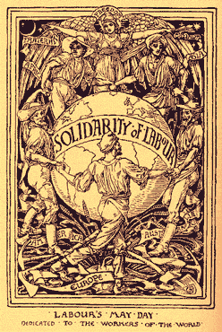

The Brief Origins of May Day
By Eric Chase - 1993.
Most people living in the United States know little about the International Workers' Day of May Day. For many others there is an assumption that it is a holiday celebrated in state communist countries like Cuba or the former Soviet Union. Most Americans don't realize that May Day has its origins here in this country and is as "American" as baseball and apple pie, and stemmed from the pre-Christian holiday of Beltane, a celebration of rebirth and fertility.
 In the late nineteenth century, the working class was in constant struggle to gain the 8-hour work day. Working conditions were severe and it was quite common to work 10 to 16 hour days in unsafe conditions. Death and injury were commonplace at many work places and inspired such books as Upton Sinclair's The Jungle and Jack London's The Iron Heel. As early as the 1860's, working people agitated to shorten the workday without a cut in pay, but it wasn't until the late 1880's that organized labor was able to garner enough strength to declare the 8-hour workday. This proclamation was without consent of employers, yet demanded by many of the working class.
At this time, socialism was a new and attractive idea to working people, many of whom were drawn to its ideology of working class control over the production and distribution of all goods and services. Workers had seen first-hand that Capitalism benefited only their bosses, trading workers' lives for profit. Thousands of men, women and children were dying needlessly every year in the workplace, with life expectancy as low as their early twenties in some industries, and little hope but death of rising out of their destitution. Socialism offered another option.
A variety of socialist organizations sprung up throughout the later half of the 19th century, ranging from political parties to choir groups. In fact, many socialists were elected into governmental office by their constituency. But again, many of these socialists were ham-strung by the political process which was so evidently controlled by big business and the bi-partisan political machine. Tens of thousands of socialists broke ranks from their parties, rebuffed the entire political process, which was seen as nothing more than protection for the wealthy, and created anarchist groups throughout the country. Literally thousands of working people embraced the ideals of anarchism, which sought to put an end to all hierarchical structures (including government), emphasized worker controlled industry, and valued direct action over the bureaucratic political process. It is inaccurate to say that labor unions were "taken over" by anarchists and socialists, but rather anarchists and socialist made up the labor unions.
At its national convention in Chicago, held in 1884, the Federation of Organized Trades and Labor Unions (which later became the American Federation of Labor), proclaimed that "eight hours shall constitute a legal day's labor from and after May 1, 1886." The following year, the FOTLU, backed by many Knights of Labor locals, reiterated their proclamation stating that it would be supported by strikes and demonstrations. At first, most radicals and anarchists regarded this demand as too reformist, failing to strike "at the root of the evil." A year before the Haymarket Massacre, Samuel Fielden pointed out in the anarchist newspaper, The Alarm, that "whether a man works eight hours a day or ten hours a day, he is still a slave."
Despite the misgivings of many of the anarchists, an estimated quarter million workers in the Chicago area became directly involved in the crusade to implement the eight hour work day, including the Trades and Labor Assembly, the Socialistic Labor Party and local Knights of Labor. As more and more of the workforce mobilized against the employers, these radicals conceded to fight for the 8-hour day, realizing that "the tide of opinion and determination of most wage-workers was set in this direction." With the involvement of the anarchists, there seemed to be an infusion of greater issues than the 8-hour day. There grew a sense of a greater social revolution beyond the more immediate gains of shortened hours, but a drastic change in the economic structure of capitalism.
In a proclamation printed just before May 1, 1886, one publisher appealed to working people with this plea:
- Workingmen to Arms!
- War to the Palace, Peace to the Cottage, and Death to LUXURIOUS IDLENESS.
- The wage system is the only cause of the World's misery. It is supported by the rich classes, and to destroy it, they must be either made to work or DIE.
- One pound of DYNAMITE is better than a bushel of BALLOTS!
- MAKE YOUR DEMAND FOR EIGHT HOURS with weapons in your hands to meet the capitalistic bloodhounds, police, and militia in proper manner.
Not surprisingly the entire city was prepared for mass bloodshed, reminiscent of the railroad strike a decade earlier when police and soldiers gunned down hundreds of striking workers. On May 1, 1886, more than 300,000 workers in 13,000 businesses across the United States walked off their jobs in the first May Day celebration in history. In Chicago, the epicenter for the 8-hour day agitators, 40,000 went out on strike with the anarchists in the forefront of the public's eye. With their fiery speeches and revolutionary ideology of direct action, anarchists and anarchism became respected and embraced by the working people and despised by the capitalists.
The names of many - Albert Parsons, Johann Most, August Spies and Louis Lingg - became household words in Chicago and throughout the country. Parades, bands and tens of thousands of demonstrators in the streets exemplified the workers' strength and unity, yet didn't become violent as the newspapers and authorities predicted.
More and more workers continued to walk off their jobs until the numbers swelled to nearly 100,000, yet peace prevailed. It was not until two days later, May 3, 1886, that violence broke out at the McCormick Reaper Works between police and strikers.
For six months, armed Pinkerton agents and the police harassed and beat locked-out steelworkers as they picketed. Most of these workers belonged to the "anarchist-dominated" Metal Workers' Union. During a speech near the McCormick plant, some two hundred demonstrators joined the steelworkers on the picket line. Beatings with police clubs escalated into rock throwing by the strikers which the police responded to with gunfire. At least two strikers were killed and an unknown number were wounded.
Full of rage, a public meeting was called by some of the anarchists for the following day in Haymarket Square to discuss the police brutality. Due to bad weather and short notice, only about 3000 of the tens of thousands of people showed up from the day before. This affair included families with children and the mayor of Chicago himself. Later, the mayor would testify that the crowd remained calm and orderly and that speaker August Spies made "no suggestion... for immediate use of force or violence toward any person..."
As the speech wound down, two detectives rushed to the main body of police, reporting that a speaker was using inflammatory language, inciting the police to march on the speakers' wagon. As the police began to disperse the already thinning crowd, a bomb was thrown into the police ranks. No one knows who threw the bomb, but speculations varied from blaming any one of the anarchists, to an agent provocateur working for the police.
Enraged, the police fired into the crowd. The exact number of civilians killed or wounded was never determined, but an estimated seven or eight civilians died, and up to forty were wounded. One officer died immediately and another seven died in the following weeks. Later evidence indicated that only one of the police deaths could be attributed to the bomb and that all the other police fatalities had or could have had been due to their own indiscriminate gun fire. Aside from the bomb thrower, who was never identified, it was the police, not the anarchists, who perpetrated the violence.
Eight anarchists - Albert Parsons, August Spies, Samuel Fielden, Oscar Neebe, Michael Schwab, George Engel, Adolph Fischer and Louis Lingg - were arrested and convicted of murder, though only three were even present at Haymarket and those three were in full view of all when the bombing occurred. The jury in their trial was comprised of business leaders in a gross mockery of justice similar to the Sacco-Vanzetti case thirty years later, or the trials of AIM and Black Panther members in the seventies. The entire world watched as these eight organizers were convicted, not for their actions, of which all of were innocent, but for their political and social beliefs. On November 11, 1887, after many failed appeals, Parsons, Spies, Engel and Fisher were hung to death. Louis Lingg, in his final protest of the state's claim of authority and punishment, took his own life the night before with an explosive device in his mouth.
The remaining organizers, Fielden, Neebe and Schwab, were pardoned six years later by Governor Altgeld, who publicly lambasted the judge on a travesty of justice. Immediately after the Haymarket Massacre, big business and government conducted what some say was the very first "Red Scare" in this country. Spun by mainstream media, anarchism became synonymous with bomb throwing and socialism became un-American. The common image of an anarchist became a bearded, eastern European immigrant with a bomb in one hand and a dagger in the other.
Today we see tens of thousands of activists embracing the ideals of the Haymarket Martyrs and those who established May Day as an International Workers' Day. Ironically, May Day is an official holiday in 66 countries and unofficially celebrated in many more, but rarely is it recognized in this country where it began.
Over one hundred years have passed since that first May Day. In the earlier part of the 20th century, the US government tried to curb the celebration and further wipe it from the public's memory by establishing "Law and Order Day" on May 1. We can draw many parallels between the events of 1886 and today. We still have locked out steelworkers struggling for justice. We still have voices of freedom behind bars as in the cases of Mumia Abu Jamal and Leonard Peltier. We still had the ability to mobilize tens of thousands of people in the streets of a major city to proclaim "THIS IS WHAT DEMOCRACY LOOKS LIKE!" at the WTO and FTAA demonstrations.
Words stronger than any I could write are engraved on the Haymarket Monument:
THE DAY WILL COME WHEN OUR SILENCE WILL BE MORE POWERFUL THAN THE VOICES YOU ARE THROTTLING TODAY.
Truly, history has a lot to teach us about the roots of our radicalism. When we remember that people were shot so we could have the 8-hour day; if we acknowledge that homes with families in them were burned to the ground so we could have Saturday as part of the weekend; when we recall 8-year old victims of industrial accidents who marched in the streets protesting working conditions and child labor only to be beat down by the police and company thugs, we understand that our current condition cannot be taken for granted - people fought for the rights and dignities we enjoy today, and there is still a lot more to fight for. The sacrifices of so many people can not be forgotten or we'll end up fighting for those same gains all over again. This is why we celebrate May Day.